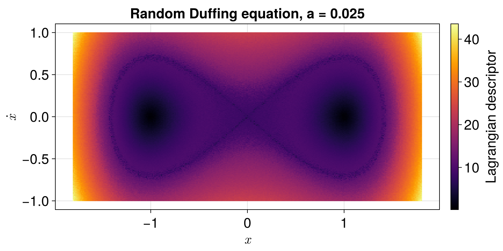

Random Ordinary Differential Equations
We consider, now, some examples of applying the Lagrangian descriptor method to equations of the type RODEProblem.
Random Duffing equation
We consider, first, the random Duffing equation
\[\ddot x = x - x^3 + a\sin(W_t),\]
where $\{W_t\}_t$ is a standard Wiener process.
With LagrangianDescriptors.jl, we i) start by setting up the equation as a RODEProblem; next, we ii) wrap that as a LagrangianDescriptorProblem; then we iii) solve it; and finally, we iv) plot the result with the built-in plot recipe. Each initial condition is solved with its own realization of the noise, and the forward and backward directions are driven by independent noise, as for a two-sided Wiener process.
So we first load the relevant packages:
using StochasticDiffEq
using CairoMakie
using LinearAlgebra: norm
using LagrangianDescriptorsNext we set up the RODEProblem, with the default noise, a standard Wiener process, here with a single component, given by rand_prototype, and a seed for reproducible results:
function f!(du, u, p, t, W)
x, y = u
du[1] = y
du[2] = x - x^3 + p * sin(W[1])
end
p = 0.025
u0 = [0.5, 2.2]
tspan = (0.0, 8.0)
prob = RODEProblem(f!, u0, tspan, p; rand_prototype = [0.0], seed = 123)RODEProblem with uType Vector{Float64} and tType Float64. In-place: true
Non-trivial mass matrix: false
timespan: (0.0, 8.0)
u0: 2-element Vector{Float64}:
0.5
2.2With the RODE problem setup, we choose an infinitesimal Lagrangian descriptor, a collection of initial conditions on the phase space, which is the region to be "painted", and finally we build the LagrangianDescriptorProblem:
M(du, u, p, t, W) = norm(du)
uu0 = [[x, y] for y in range(-1.0, 1.0, length=301), x in range(-1.8, 1.8, length=301)]
lagprob = LagrangianDescriptorProblem(prob, M, uu0)LagrangianDescriptorProblem for a RODEProblem
initial conditions: 90601 (301 × 301) of type Vector{Float64}
direction: :bothThe Lagrangian descriptors are the time-integration of the infinitesimal descriptor along forward and backward solutions of the equation. They are integrated along with the solutions by "solving" the LagrangianDescriptorProblem, with an overload of the solve method from the SciML ecosystem:
lagsol = solve(lagprob, RandomHeun(), dt=1/100)LagrangianDescriptorSolution
initial conditions: 90601 (301 × 301) of type Vector{Float64}
direction: :bothWith the solution at hand, we plot the Lagrangian descriptors to visualize the dynamics of the system:
fig, ax, plt = heatmap(lagsol; axis = (title = "Random Duffing equation, a = $p", xlabel = L"x", ylabel = L"\dot{x}"))
Colorbar(fig[1, 2], plt; label = "Lagrangian descriptor")
fig